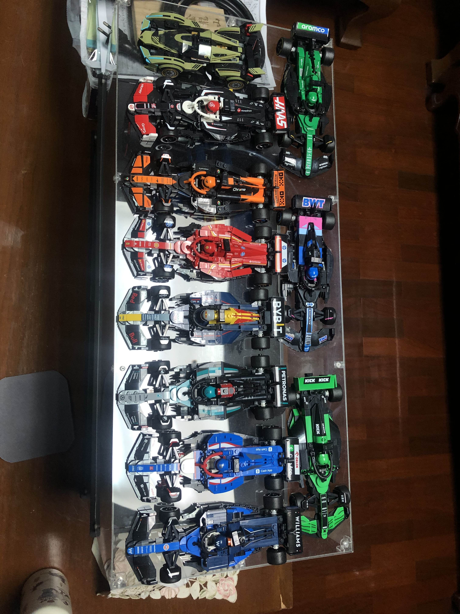
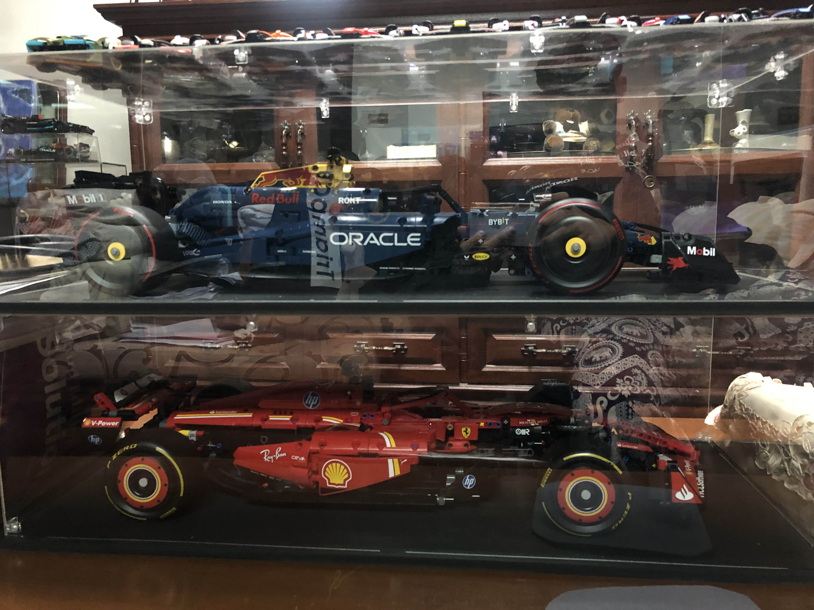
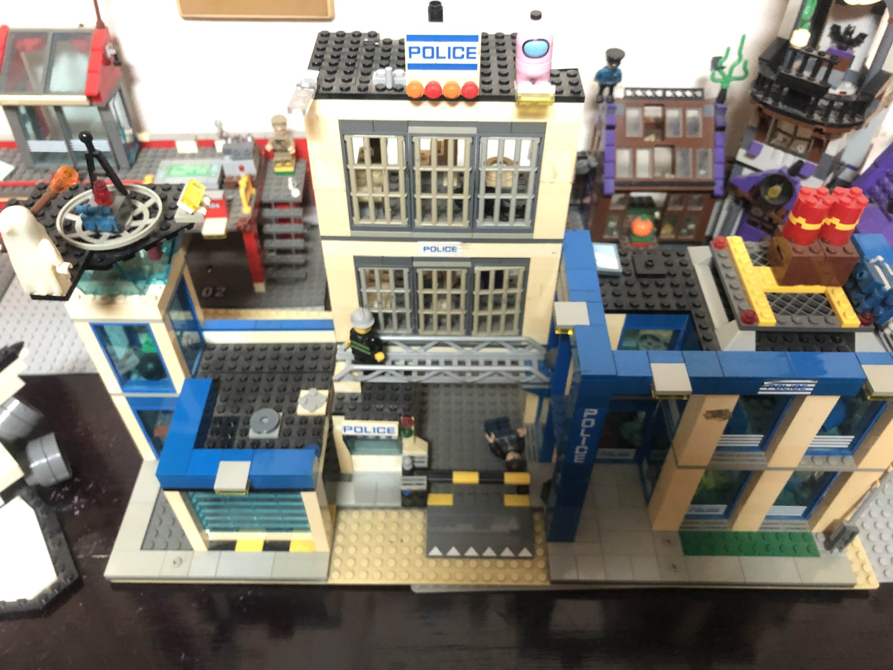
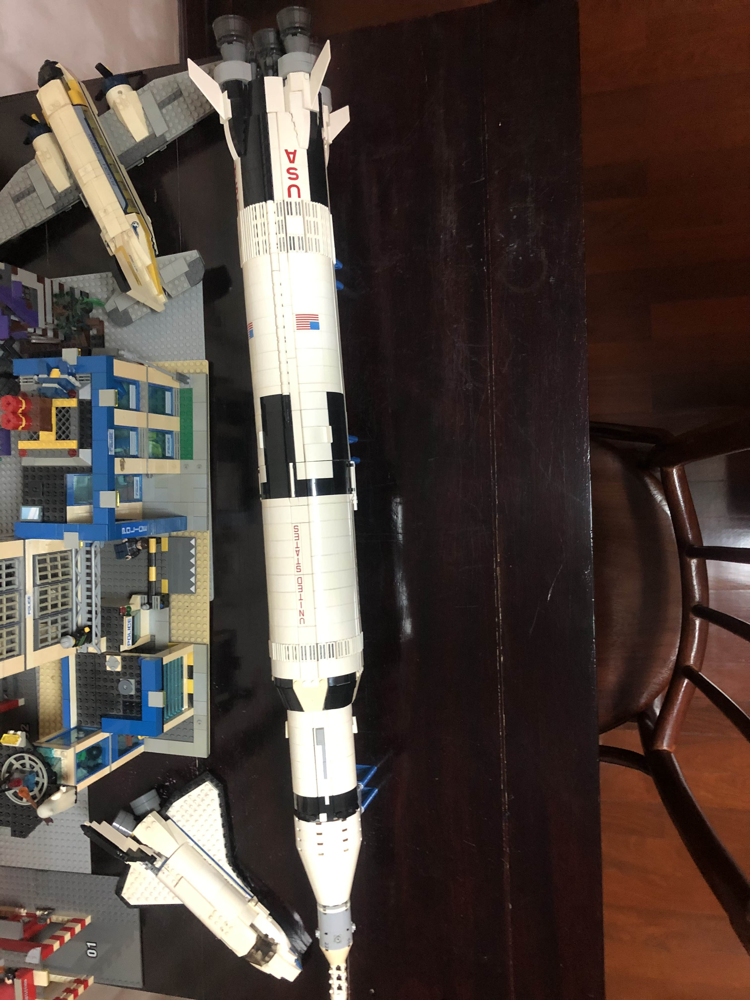

Why I love Lego
I’ve been building Lego since I was a kid — it’s one of those hobbies that never gets boring. The satisfaction of snapping pieces together and slowly watching a model come to life is exactly why I keep going back. Some builds take hours, but the final result and that little ‘‘click’’ when parts fit together make it worth every minute.
Over the last ten years I’ve built lots of sets. A few stand out as favourites:
- LEGO Technic 42206 Oracle Red Bull Racing RB20 F1 Car — a brilliant, detailed Technic racer.
- LEGO Ideas 21309 NASA Apollo 11 Saturn V — an incredible display model with beautiful scale.
- LEGO City 60047 Police Station — a fun, busy set with lots of little details.
There are also a few big sets on my wishlist for the near future — Titanic, Colosseum, and Eiffel Tower — they’re massive and would be a great challenge when I’m ready for a long build.
Speed Champions
LEGO Speed Champions set
F1 Technic (Red Bull & Ferrari)
LEGO Technic F1 builds — Red Bull and Ferrari
Police Station
LEGO City 60047 Police Station
Saturn V
LEGO Ideas 21309 NASA Apollo 11 Saturn V